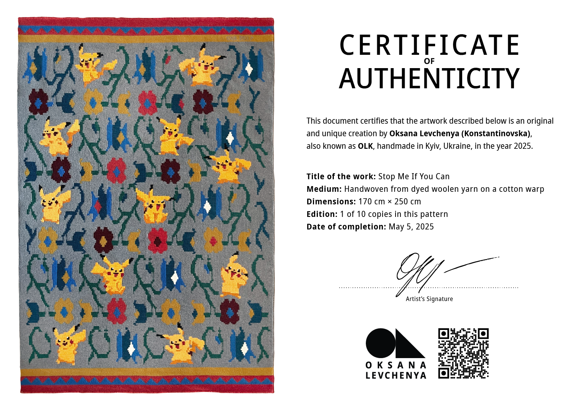

Certificate of Authenticity
This document certifies that the artwork described below is an
original and unique creation by
Oksana Levchenya (Konstantinovska), also known as OLK,
handmade in Kyiv, Ukraine, in the year 2025.
Title of the work: Stop Me If You Can
Medium: Handwoven from dyed woolen yarn on a cotton warp
Dimensions: 170 cm × 250 cm
Edition: 1 of 10 copies in this pattern
Date of completion: May 5, 2025
Signed by the artist
Kyiv, Ukraine
📧 Email: olkmanufactory@gmail.com
📞 Phone: +38 067 466 73 60
